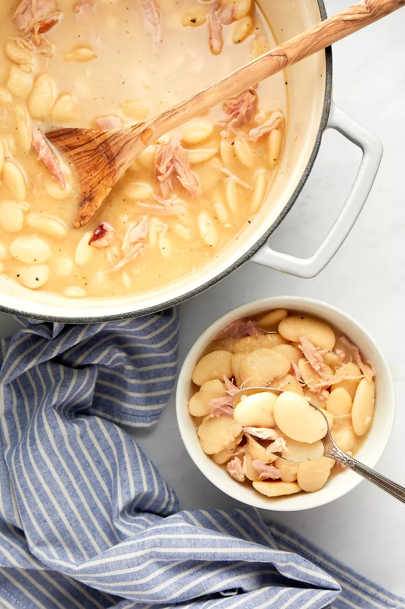

Creamy Southern Lima Beans PREP TIME 15 mins COOK TIME 2 hrs TOTAL TIME 2
hrs 15 mins SERVINGS 6 to 8 servings
Ingredients:
1 pound dry large lima beans
1/2 large white onion, chopped (about 1 1/2 cups)
4 cloves garlic, finely chopped
1 tablespoon garlic powder
1 tablespoon onion powder
2 teaspoons salt
1 teaspoon black pepper
1 bay leaf
2 smoked turkey wings
8 cups chicken stock (preferably unsalted or low-sodium)
Additional salt and pepper to taste
Instructions:
Pick over the dry beans: Pick over the beans, removing any dirt or
debris.
Rinse the beans in a colander; drain Lima Beans in a Colander.
for Southern Lima Beans Recipe Cook the beans:
Place the beans, onion, garlic cloves, garlic powder, onion powder,
salt, black pepper, bay leaf, and turkey wings in a large Dutch oven or
pot. Add the stock. Bring to a boil over medium-high heat. Once it
starts to boil, decrease the heat to medium-low. Cover with a lid.
Simmer for up to 2 hours or until the beans are tender to your liking.
Make sure to stir the mixture a few times while cooking for a creamier
sauce.
Pick the meat from the turkey wings: Using tongs, remove the turkey
wings and let them cool until you can comfortably handle them. Remove
the cooked meat from the bones using a fork and shred; discard the skin.
Place the meat back in the pot.
Remove the bay leaf; discard.
Season and serve: Taste the beans and season with additional salt and
pepper, if needed. Serve warm.
